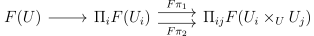
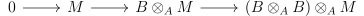
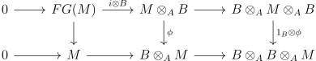
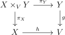

Say we have a variety over some finite extension of \(\QQ \). How can we tell if it is actually defined over \(\QQ \) and simply extended to the larger field? How many isomorphism classes of such varieties over \(\QQ \) are there? Descent gives us a systematic way to approach this type of problem. Roughly, it is analogous to the following kind of topological problem:
Say we have a principal \(G\)-bundle \(\xi \) defined over some space \(X\) and a local homeomorphism \(X \to Y\). Then is \(\xi \) the pullback of a \(G\)-bundle on \(Y\)? How can one classify all the possible \(G\)-bundles on \(Y\) that \(\xi \) is a pullback of?
Suppose now that \(X\) is actually an open cover of \(Y\), and \(\xi \) is trivial. Then the solution is quite classical. A \(G\)-bundle on \(X\) is determined by \(G\)-bundles on \(Y\) along with transition functions on the intersections, and so the Čech cohomology of the cover, \(\check{H}^1(X \to Y,G)\), classifies the \(G\)-bundles on \(Y\).
Grothendieck realized that one can take the same point of view quite generally in the algebro-geometric world: view the finite extension of \(\QQ \) as a cover of \(\QQ \). The idea of being able to glue on an cover works just as well here, because of the main results presented here: a finite field extension is an fpqc morphism. Then again the solution to the problem becomes classified by equivalence classes of ways to glue, which sometimes amounts to a kind of Čech cohomology of the cover.
In fact, we will see that finite Galois extensions can be thought of as principal \(G\)-bundles, or \(G\)-torsors, over the base field, where \(G\) is the Galois group thought of as a discrete group. This helps clarify the relationship between the extension and the base field, as there are very general correspondences between principal bundles and the objects they are defined over.
If we have an open cover of schemes \(U_i \to U\) and maps \(f_i: U_i \to V\) that the \(f_i\) agree on the intersections \(U_i \cap U_j = U_i \times _U U_j\), we can glue the \(f_i\) together to form a morphism \(f:U \to V\). Amazingly enough, it is not necessary that the maps \(U_i \to U\) are an open cover in the Zariski topology. Rather, we can require them to be faithfully flat quasi-compact (or fpqc) cover. This means that the map \(\coprod U_i \to U\) is faithfully flat, and has the property that every point has a quasi-compact neighborhood whose image is affine and open. If a faithfully flat morphism is locally of finite presentation (we call this fppf), it is an open map, and hence fpqc. Thus étale and smooth covers locally of finite presentation are examples of fpqc covers.
We can then prove the following glueing theorem for fpqc covers:
Theorem 2.1. Suppose \(W_i \to U\) is an fpqc cover with maps \(f_i: W_i \to V\) such that the maps \(f_{ij}: W_i \times _U W_j \to V\) given by projecting to \(W_i\) and composing with \(f_i\) satisfy \(f_{ij} = f_{ji}\). Then there is a unique morphism \(U \to V\) such that each \(f_i\) is the composite \(W_i \to U \to V\).
Proof.
First note that we can pretend that the cover \(W_i\) is just one object \(W\) by letting \(W\) be the disjoint union of the \(W_i\).
The quasi-compactness condition will let us reduce to the case when \(U,W\) are affine. Indeed, suppose the theorem holds in this case. By the quasi-compactness condition, there is a finite quasi-compact open cover \(W_i\) whose images \(U_i\) are an affine open cover of \(U\). Let \(W_{ij}\) be an open affine cover of \(W_i\). Then from the case where \(U,W\) are affine, we can glue the morphism of \(W\) restricted to each \(W_{ij}\) to get a morphism on each \(U_i\). By the uniqueness in the affine case, we see that if a glued map \(U \to V\) exists, it must restrict to these maps, and so we get uniqueness of the glued map \(U \to V\) (if it exists). In particular, the glued maps \(U_i \to V\) restricts to a unique glued map on \(U_{ij}\), so can be glued together to form a map \(U \to V\). It is easy to see this is the morphism we want.
From now on, \(U,W\) are affine. Suppose that the theorem holds when \(V\) is affine. Then for general \(V\), if existence holds, then uniqueness holds, as it holds when restricting to an affine cover of \(V\), and a morphism is determined by what it is on an open cover. For existence, for any two points \(v,w \in W\) with the same image \(u \in U\), it is easy to see that there is a point in \(W \times _U W\) which projects to \(v,w\) via the two projections (choose a maximal ideal in \(k(v) \otimes _{k(u)} k(w)\)). Thus there is a well-defined set theoretic map \(U \to V\) that glues together the map from \(W\). The map \(W \to U\) is continuous, surjective, and open (as it is flat and quasi-compact), so the topology on \(U\) is the one induced by the morphism from \(W\). Moreover, we can turn this into a map of ringed spaces by using the unique map that is there for each affine open of \(V\). These glue by uniqueness to give the desired morphism.
Finally consider the case when \(W,U,V\) are affine. Let \(W = \Spec A, U = \Spec B, V = \Spec C\). Then \(A\) is a faithfully flat \(B\)-algebra, and there is a map \(C \to A\) such that the two maps \(C \to A\otimes _B A\) agree. We would like to show that there is a map \(C \to B\) that is compatible with the map to \(A\). It suffices to show that the sequence \(0 \to A \to B \to B \otimes _A B\) is exact, where the map \(B \to B\otimes _A B\) is the difference of the two projections. To see this, since \(B\) is faithfully flat over \(A\), this sequence is exact iff \(0 \to B \to B \otimes _A B \to (B\otimes _A B)\otimes _A B = (B\otimes _A B) \otimes _{B} (B \otimes _A B)\) is exact. Note that this is an exact sequence of the same form as before if we let \(D = B \otimes _A B\).
Clearly \(B \to D\) is injective as \(D\) is faithfully flat over \(B\). \(B \to D \to D \otimes _B D\) clearly composes to \(0\). We only need to show the kernel of \(D \to D \otimes _B D\) is in \(B\).
The morphism \(B \to B\otimes _A B\) has a section \(f\) given by the multiplication (diagonal) map. If \(a\) is in the kernel of the map \(D \to D \otimes _B D\), then \(a\otimes 1 = 1 \otimes a\), so applying \(f\) to both sides we have \(f(a) = a\), and so \(a \in B\). □
One way to think of the result just shown is that a representable functor is a sheaf in a topology finer than the Zariski topology (the fpqc topology). The fpqc topology is not a topology in the usual sense, rather it is a Grothendieck topology. For concreteness at the price of elegance and naturality, we will consider only pretopologies.
Definition 3.1. Let \(C\) be a category with fibre products. Then a pretopology on \(C\) is a way to say when some maps \(\{U_i \to U\}\) cover \(U\). Any isomorphism is a cover. It is stable under base change, meaning that if \(V \to U\) is a morphism, the maps \(\{U_i \times _U V \to V\}\) cover \(V\). Finally it is transitive, meaning if \(V_{ij} \to U_i\) is a cover for each \(U_i\), then \(V_{ij} \to U\) is a cover.
For example, the Zariski topology on \(\Sch \) is the one where covers are exactly those collections where each map is an open immersion, and they are jointly surjective.
Similarly we can define the classical topology on \(\Top \) via open covers, and the fpqc topology on \(\Sch \) via fpqc covers. A pretopology on a category \(C\) induces on on the slice category \(C/O\) for any object \(O\) just by declaring morphisms to be a cover if they are a cover after applying the forgetful functor to \(C\). A category with a (pre)topology is called a site.
Sites are a natural setting to talk about sheaves. We will call a contravariant functor from \(C\) a presheaf. For example, \(\Hom (-,O)\) is a presheaf of sets for each \(O \in C\). A presheaf \(C^{op} \to D\) is a sheaf if for every cover \(U_i \to U\), the following diagram is a equalizer diagram:

For example, the Seifert-van Kampen theorem in topology says that the fundamental groupoid \(\Pi _1^{op}: \Top ^{op} \to \Grpd ^{op}\) is a sheaf. For a descent theory proof of this, first via Tannakian formalism we can replace the fundamental groupoid \(\Pi _1\) with its category of \(G\)-sets. By the Galois correspondence, the category of \(\Pi _1\)-sets is equivalent to the category of covering spaces (the number of fibres can vary across connected components), which is a sheaf by descent.
Theorem 2.1 says that representable functors are sheaves in the fpqc topology on \(\Sch \). This easily implies that they are also sheaves on \(\Sch /S\) for any scheme.
More generally, we would like not only morphisms of schemes to descend via an fpqc cover, but also objects over a scheme and morphisms between them, in particular quasi-coherent sheaves. Suppose one has a presheaf of categories \(F: C^{op} \to Cat\). We can think of \(F\) as sending \(O \in C\) to a category of objects over \(O\), and a morphism \(f:O \to P\) to a “pullback” functor \(f^*:F(P) \to F(O)\). We can then form a category of \(F\)-objects over \(C\) as follows: the objects are pairs \((O,o), o \in F(o)\). The morphisms are pairs \((f,g): (O,o) \to (P,p)\), where \(f:O \to P\) is a morphism and \(g:o \to f^*p\) is a morphism. We call this the fibred category associated to the functor \(F\) (denoted \(F/C\)), and it comes with a forgetful functor to \(C\).
Here I will ignore issues dealing with objects being canonically isomorphic but not identical. If this is allowed, then we can make a functor \(\Sch ^{op} \to \Cat \) sending a scheme to its category of quasi-coherent sheaves, with the map on arrows being the pullback. Note in reality if \(f:A \to B, g:B \to C\) are morphisms of schemes, \((g \circ f)^*\) is only canonically isomorphic to \(g^* \circ f^*\), but this will be ignored here. The general notion of a fibred category exists to deal with this kind of issue, but otherwise doesn’t add much substantial. Indeed, every fibred category is equivalent (in the sense of fibred categories) to one that comes from an actual functor.
The notion of a stack is the right generalization of sheaf to category valued presheaves (or fibred categories) on \(C\). It can be thought of as a category of objects over \(C\) that are defined locally in the topology on \(C\). Here is the idea: suppose we have a cover \(U_i \to U\), objects \(\xi _i/U_i \in F/C\) (this means \(F(\xi _i) = U_i\)), and isomorphisms \(\varphi _{ij}: \pi _1^* \xi _i \to \pi _2^* \xi _j\) in \(F(U_i\times _U U_j)\) that satisfy the cocycle condition \(\varphi _{ij} \circ \varphi _{jk} = \varphi _{ik}\) after pulling back to \(U_i\times _U U_j \times _U U_k\). Then if \(F\) is a stack, then giving this data should be the same as giving an object over \(U\).
More precisely, given a cover \(U_i \to U\), and a fibred category \(F\), we can form a category of descent data \(F(U_i \to U)\) define to be the category where the objects are the data \((\xi _i, \varphi _{ij})\) as in the paragraph above, and morphisms \((\xi _i, \varphi _{ij}) \to (\xi '_i, \varphi '_{ij})\) are morphisms \(f_i:\xi _i \to \xi '_i\) such that \(F\pi _2^*f_j \circ \varphi _{ij} = \varphi '_{ij} \circ F\pi _1^*f_u\). There is a natural functor \(F(U) \to F(U_i \to U)\) sending an object \(\xi /U\) to the pullback of \(\xi \) along the cover, where \(\phi _{ij}\) are canonical isomorphisms. Then \(F\) is a stack if for every cover, the functor \(F(U) \to F(U_i \to U)\) is an equivalence. Basic examples include categories of fibre bundles and categories of sheaves in the topology that they are defined over. What is surprising is that although quasi-coherent sheaves are defined in the Zariski topology, they form a stack in the fpqc topology, which is much finer.
One note: being a stack is only dependant on \(F\) up to equivalence of fibred categories, and is not dependant on less than the pretopology, but rather the topology it induces. Namely, say that a collection of morphisms \(V_i \xrightarrow{f_i} U\) is a refinement of \(U_i \xrightarrow{g_i} U\) if each \(f_i\) factors through some \(g_j\). Then \(F(U) \to F(U_i \to U)\) is actually an equivalence if it has a refinement for which it is.
If the map \(F(U) \to F(U_i \to U)\) is fully faithful for each cover, we call \(F\) a prestack. We can then imagine \(F(U_i \to U)\) as \(F(U)\) with some local objects adjoined to it. More precisely, we can form a stack by taking the limit of \(F(U_i \to U)\) over all covers (the category of local objects), and each \(F(U_i \to U)\) will embed as a full subcategory (this includes \(F(U)\) via the trivial cover).
First let’s consider the case of an affine fpqc cover of an affine scheme, i.e a faithfully flat extension \(A \to B\). The category of descent objects \(\Mod _{A \to B}\) can be described as follows: it is a \(B\)-module \(M\) along with an isomorphism \(\phi : M \otimes _A B \to B \otimes _A M\) such that if \(s:N\otimes N' \to N' \otimes N\) is the symmetry isomorphism for any modules \(N,N'\), then \(1_B\otimes \phi \circ \phi \otimes 1_B = 1_B \otimes s \circ \phi \otimes 1_B \circ 1_M \otimes s\).
Theorem 4.1. For a faithfully flat extension \(A \to B\) of affine schemes over \(S\), the map \(\Mod _{A} \to \Mod _{A \to B}\) is an equivalence.
Proof. We need to show the natural map \(F:\Mod _A \to \Mod _{A\to B}\) is an equivalence. We can construct a homotopy inverse \(G:\Mod _{A\to B} \to \Mod A\) by considering the submodule of \(M\) of elements \(a\) such that \(1\otimes a = \phi (a \otimes 1)\). It is easy to see that this is functorial. Just as in the proof of Theorem 2.1, we have that the sequence

is exact, where the last map is the difference of the two projection maps.
There is a natural map from an \(A\)-module \(M\) to \(GF(M)\) given by the inclusion \(M \to B \otimes _A M\). The exact sequence above exactly says that this is a natural isomorphism.
To see \(FG\) is isomorphic to the identity, there is a natural map from \(FG\) to the identity given by restricting the action map \(B\otimes _A M \to M\) to \(FG(M)\). Then the five lemma applied to

shows that \(FG\) is isomorphic to the identity, where the top exact row comes from tensoring the exact sequence definition of \(G(M)\) with \(B\) which is flat, and the bottom row is the exact sequence from before. □
The reasoning from Theorem 2.1 that was used to reduce to the affine cases is entirely formal, and more generally shows that if \(F\) is a sheaf in the Zariski topology and a sheaf in the fpqc topology when restricted to affine schemes, then \(F\) is a sheaf. We can generalize this to stacks:
Theorem 4.2. Suppose \(F:\Sch /S^{op} \to \Cat \) is a functor such that \(F/(\Sch /S)\) is a stack in the Zariski topology and such that \(F(U) \to F(V \to U)\) is an equivalence when \(V \to U\) is a faithfully flat morphism of affine schemes. Then \(F/\Sch /S\) is a stack in the fpqc topology.
Proof. Given a fibred category \(G/C\) and two objects \(\nu , \xi \) over and object \(O\), we can consider the functor \(\underline{\Hom }_O(\nu ,\xi )\) that takes an object \((P \xrightarrow{f} O) \in G/C\) to \(\Hom (f^*\nu ,f^*\xi )\). To say that \(G\) is a prestack is to say that this functor is always a sheaf. Thus by the previous result for sheaves, \(F\) is a prestack. It remains to show that the functors \(F(U) \to F(U_i \to U)\) are essentially surjective.
Next, we can reduce to the case when the cover is a single morphism. Indeed, let \(V = \coprod _i U_i\). Then there is a natural morphism \(F(V \to U) \to F(U_i \to U)\) and to reduce to showing it for \(V\) we need to show this is essentially surjective. We can consider the Zariski cover \(U_i \to V\), and note we have \(V \times _U V \cong \coprod _{ij} U_i\times _U U_j\), so given descent data \((\xi _i, \varphi _{ij}) \in F(U_i \to U)\), we can glue \(\xi _i\) to a \(\xi /V\) and similarly the \(\varphi _{ij}\) can be glued to a \(\varphi \) for \(V\) in the Zariski topology. Then \((\varphi ,\xi ) \in F(V \to U)\) gets sent to something isomorphic to our original descent data.
Now we will reduce to \(U\) affine. Cover \(U\) by affine opens \(U_i\), let \(V_i\) be the preimages. Given \((\xi ,\varphi )\), we can pullback this data to get \((\xi _i,\varphi _i)\), which glues together to give objects \(\chi _i/U_i\). Note that we can pullback \(\chi _i\) to \(U_i \cap U_j\), and by the fact that \(F(V_i\cap V_j \to U_i \cap U_j)\) is a prestack, the pullback of \(\chi _i\) will agree with the pullback of \(\chi _j\) up to the glued pullback of \(\varphi _i\), so since \(F\) is a stack in the Zariski topology, we get our desired glued object over \(U\).
Now we will use the quasi-compactness condition in fpqc. We can choose a covering of \(V\) by \(V_i\), quasi-compact open sets that surject onto \(U\). The theorem holds for each \(V_i\), since it can be refined by a morphism of affine schemes. To show essential surjectivity for \(F(V \to U)\), it suffices to show then that the natural map \(F(V \to U) \to F(V_i \to U)\) is faithful for some \(i\) because of the factorization of the natural map \(F(U) \to F(V\to U) \to F(V_i \to U)\). But it must be since if two morphisms restrict to the same thing on \(V_i\), they must restrict to the same thing on \(V_i \cup V_j\) for any \(j\) as \(F(V_i\cup V_j \to U) \to F(V_i \cup U)\) is an equivalence as \(V_i \cup V_j \to U\) is quasi-compact. Thus they are the same on all of \(V\). □
Just because every representable functor on a site \(C\) is a sheaf doesn’t necessarily mean that the functor sending an object to its slice category gives a stack. It, and any subfunctor, however, always gives a prestack. Using descent of quasi-coherent sheaves, we can show that for the case of the functor sending a scheme to the categories of affine morphisms over it, we do get a stack. Indeed, affine morphisms are the same as sheaves of commutative algebras, which are commutative monoid objects in the category of quasi-coherent sheaves. The category of commutative monoid objects in the category of descent data are the same as the category of descent data in the category of commutative monoid objects (descent preserves the monoidal structure), so it follows that sheaves of commutative algebras, and hence affine morphisms form a stack.
Finally let’s consider descent for projective morphism with ample invertible sheaves, which in practice is useful for problems such as the one discussed at the beginning. This is useful in practice since we would like to deal with projective varieties. Let all schemes from now on be locally Noetherian. Let \(F\) be a subfunctor of the functor taking a scheme \(U\) over some base \(S\) to the category of flat projective morphisms \(f:X \to U\) over \(U\) with an ample invertible sheaf \(L_f\) on \(X\). Suppose that \(L\) is natural in that the pullback of \(L(X)\) via a map \(g:Y \to X\) is (canonically isomorphic to) \(L(Y)\), and that if \(U_i \times _U X \to U\) is in \(F\) for some covering \(U_i\), then the corresponding map \(X \to U\) is in \(F\).
A basic example of this is for a nonnegative integer \(g \neq 1\), \(F_{g,S}\), where \(U\) is sent to the category of all smooth proper morphisms over \(U\) where the geometric fibres are curves of genus \(g\). When \(g > 1\), the canonical bundle can serve as \(L\), as it is ample, and when \(g = 0\), the anticanonical bundle works.
Theorem 5.1. Given the conditions above, \(F\) is a stack in the fpqc topology.
Proof. By the fact that representable functors are sheaves in the fpqc topology, \(F\) is a prestack. Moreover it’s not hard to see that in the Zariski topology it is a stack. By Theorem 4.2, we will only need to show that for a faithfully flat morphism of affine schemes, descent data comes from an actual morphism. So let \(f: V \to U\) be a faithfully flat morphism of affine \(S\)-schemes, and \(g:Y \to V\) a n object of \(F(V)\). We can first replace \(L\) by a large power of \(L\) such that it is very ample relative to \(S\) for \(U,V\) and so that \(H^1(Y_v,L_g)\) vanishes for all the fibres \(Y_v\) of the morphism \(g\). From the cohomology and base change theorem, it follows that \(g_*L_g\) is locally free, and whenever there is a diagram

the base change map \(b_{\pi _Y,h}:h^*g_*L_g\to \pi _{X*}\pi _Y^*L_g\) that is the adjoint of the natural counit map \(\pi _X^*h^*g_*L_g = \pi _Y^*g^*g_*L_g \to \pi _Y^*L_g\) is an isomorphism. Since the base change map is natural in that \(b_{a\circ b,c \circ d} = b_{b,d} \circ d^*b_{a,c}\), all base change maps discussed will be isomorphisms.
For any map \(\eta : W \to X\), we can define \(M_\eta = \eta _*L_\eta \), which we have seen is locally free. If we are given descent data \(\varphi : V \times _U Y \cong Y \times _U V\), since base change maps are isomorphism, \(\varphi \) induces an isomorphism on the corresponding maps \(M_{1 \times g} \cong M_{g \times 1 }\) that satisfies the cocycle condition. Thus it descends to a quasi-coherent sheaf \(M\) on \(U\). Then \(\PP (M)\) is a projective variety that is pulls back to \(\PP (M_g), \PP (M_{g \times 1}), \PP ({M_{1\times g}})\) via the appropriate morphisms, with descent data on \(\PP (M_g)\). Moreover, which \(Y\) has a closed embedding into \(\PP (M_g)\) as a \(V\)-scheme and this is compatible with the descent data on \(Y\) and \(\PP (M_g)\). Thus we need to show that this closed embedding descends to a closed embedding of a scheme into \(\PP (M)\). However, this follows from descent of affine morphisms, because closed embeddings are affine morphisms, and because closed embeddings descend to closed embeddings (alternatively think of it as using descent on the sheaves of ideals defining the embeddings). □
Let’s return to the motivation posed at the introduction with a simple example. Suppose that we consider \(\PP ^1_{\QQ [i]}\) and try to find \(\QQ \) varieties that extend to it. To give a concrete model, we can take the conic \(x^2 + 2ixy + z^2 = 0\). Then we consider \(\QQ [i] \otimes _\QQ \QQ [i] \cong \QQ [i] \oplus \QQ [i]\), where the isomorphism is given by \(a \otimes b \mapsto (ab,a\bar{b})\). Using the theorem above, we have to find descent data, which is given by an isomorphism from the conic extended via the first and second projections, or in other words, it is an isomorphism \(\phi \) from \(x^2 + 2ixy + z^2 = 0\) to \(x^2 - 2ixy + z^2 = 0\) and an automorphism \(\varphi \) of \(x^2 + 2ixy + z^2= 0\). The cocycle condition says that \(\varphi \) is the identity, and that \(\phi \circ \bar{\phi } = 1_C\). Now we can find some \(\phi \)s that work. Some examples that work send \((x:y:z)\) to \((-x:y:z)\), \((x:-y:z)\), \((x+2iy:y:z)\), or \((-ix:-iy-z:z)\). Note that these can give genuinely different \(\QQ \)-varieties. By looking at the change of variables \(w = x+iy\) we have \(w^2+y^2+z^2 = 0\), which is clearly defined over \(\QQ \). Indeed, this change of variables corresponds to the descent data where \(\phi \) is \((x+2iy:y:z)\), and the variety that is descended to is not isomorphic to \(\PP ^1_\QQ \), as there are no rational points. On the other hand \(\PP ^1_\QQ \) is clearly one possible variety that can be obtained.
We will see with \(G\)-torsors later that descent for Galois extensions can be understood via \(G\)-equivariant objects.
Unfortunately the example above is not linear, in that it is hard to make a cohomology theory to classify such extensions. Cohomology is more likely to work for descent on objects with multiplicative structure. For example, let \(V\) be a finite dimensional vector space over a field \(k\), and let \(K/k\) be a finite extension. Viewing \(V\) as a scheme (the associated vector bundle), we can consider the group presheaf on schemes over \(k\), \(G = \Aut (V)\), that takes a \(k\)-scheme \(U\) to \(\Aut _U(V \otimes U)\), the group of linear automorphisms of that fix the projection to \(U\). This functor is represented by \(\GL _k(V)\). Now we can consider the problem of classifying other vector spaces \(V'\) that become the same as \(V\) when extended to \(K\). Clearly \(V\) is the only one since a vector space is determined up to isomorphism by its dimension, but this now has a cohomological interpretation. Letting \(S = \Spec K\), descent data is then exactly an element \(\varphi \) of \(G(S\times S)\) satisfying \(G(\pi _2)(\varphi ) = G(\pi _1)(\varphi ) G(\pi _3)(\varphi )\) in \(G(S\times S \times S)\). Moreover an isomorphism between two descended objects gives an element \(\lambda \in G(S)\) such that on the descent data \(\phi _1, \phi _2\), we have \(G(\pi _1)(\lambda )\phi _1 G(\pi _2)^{-1} =\phi _2\). With this knowledge we can make a “chain complex” \[ G(S) \to G(S\times S) \to G(S\times S \times S) \] where the first map is really an action of \(G(S)\) on \(G(S\times S)\) and the second map is \(G(\pi _1)G(\pi _3)G(\pi _2)^{-1}\). The orbits that are in the kernel of the map \(G(S\times S) \to G(S \times S \times S)\) then correspond to the isomorphism classes of objects that descend to the same thing as \(V\), and this is also the first cohomology of the complex above, denoted \(H^1(S/\Spec k,\GL (V))\). If \(G\) is abelian (for example if \(V\) is one dimensional), then the exact sequence above is a genuine sequence of abelian groups. This more generally is a non-abelian Čech cohomology of the cover \(S/\Spec k\), and by our observations above we have shown \(H^1(S/\Spec k, \GL _k(V)) = 0\). Note this is a generalization of Hilbert’s theorem \(90\), which is the case \(V\) is one-dimensional. In particular, since étale covers of \(k\) are essentially finite extensions and since Čech cohomology in the limit over all covers should be the étale cohomology, this shows that \(H^1(\Spec k, \GL _k(V)) = 0\).
We can better understand Galois descent via \(G\)-torsors. \(G\)-torsors are the correct notion of principal \(G\)-bundles for a site. In other words, there is an object \(X\) comes with an action of \(G\) and a invariant projection map to \(Y\), and is locally trivial. Here a torsor is trivial if there is there is an equivariant isomorphism over the projection to \(Y\) to the standard action of \(G\) on \(G \times Y\).
Definition 6.1. Let A \(G\)-torsor is an arrow \(f:X\to Y\) that invariant to an action of \(G\) on \(X\), such that there is a cover \(Y_i \to Y\) such that after pulling \(f\) back along the cover, we get trivial torsors.
Equivalently, there is a covering of \(Y_i \to Y\) with each map factoring through \(f\), and such that the map \(G\times X \to X \times _Y X\) given by \((g,x) \mapsto (gx,x)\) is an isomorphism. Indeed, the second condition can be thought of as saying that \(G\) acts simply and transitively on the fibres, and the first condition then gives a local trivialization.
A Galois correspondence holds for \(G\)-torsors, but we need the notion of a \(G\)-equivariant object. Let \(F/C\) be a fibred category with \(p_F\) the functor over \(C\), and let \(G \in C\) act on \(X\) via a morphism \(a\). We will identify objects with their Yoneda embeddings.
Definition 6.2. A \(G\)-equivariant object in \(F(X)\) is an object \(\rho \) with an action \((G\circ p_F) \times \rho \to \rho \) such that \(p_F: \rho \to X\) is equivariant with respect to the action.
In other words \(G\) acts on \(\rho /X\) compatibly with the action on \(X\). If we have a principal \(G\)-bundle \(X \to Y\), and some sort of \(G\)-equivariant bundle over \(X\), then the bundle should not change as \(G\) acts on it, and we should expect that our bundle is really the pullback of a bundle on \(Y\). This result is entirely formal:
Theorem 6.3. Let \(F\to C\) be a stack and \(X \to Y\) be a \(G\)-torsor. Then there is a canonical equivalence of categories between \(F(Y)\) and \(F^G(X)\), the category of \(G\)-equivariant objects on \(X\).
I claim that if we view the Galois group \(G\) of a finite Galois extension \(L/K\) as a discrete group in the category of \(K\)-schemes, then \(f:\Spec L \to \Spec K\) is a \(G\)-torsor. Indeed, the desired trivializing cover map is \(f\) itself: \(L \otimes _k L\) is a sum of \(|G|\) copies of \(L\) as we can consider the multiplication maps coming from all the different automorphisms \(g\) of \(L\) give \(G\) maps \(L \otimes L \to L\), \(a \otimes b \mapsto ag(b)\), and the sum of these maps it is not hard to see is an isomorphism. But this is exactly the equivalent characterization of \(G\)-torsor mentioned above.
We can see that this correspondence naturally came out in the previous example of \(\PP ^1_{\QQ [i]}\). We found that giving descent data amounted to giving an automorphism \(\phi \) between a conic and its conjugate such that \(\phi \circ \bar{\phi } = 1\). This is exactly a compatible action of the Galois group on \(\PP ^1_{\QQ [i]}\), giving \(\PP ^1_{\QQ [i]}\) the structure of a \(\Gal (\QQ [i]/\QQ )\)-equivariant object.
Angelo Vistoli. Notes on Grothendieck topologies, fibered categories and descent theory. 2004. arXiv: math/0412512 [math.AG].
William C. Waterhouse. Introduction to Affine Group Schemes. Graduate Texts in Mathematics. Springer-Velag, 1979.
I pledge my honor that this paper is in accordance with university policy.